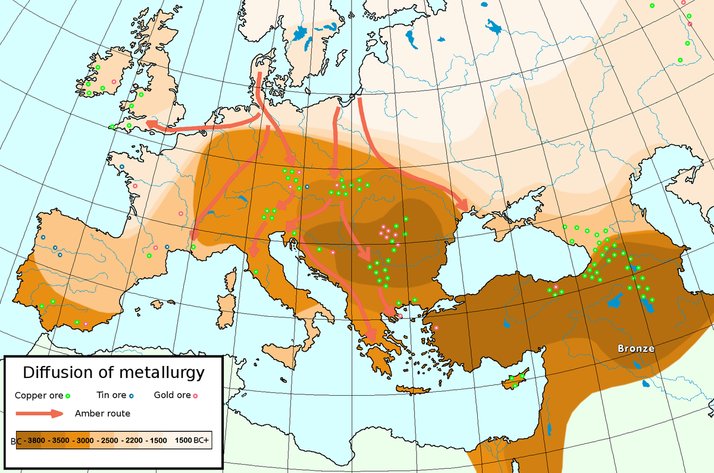
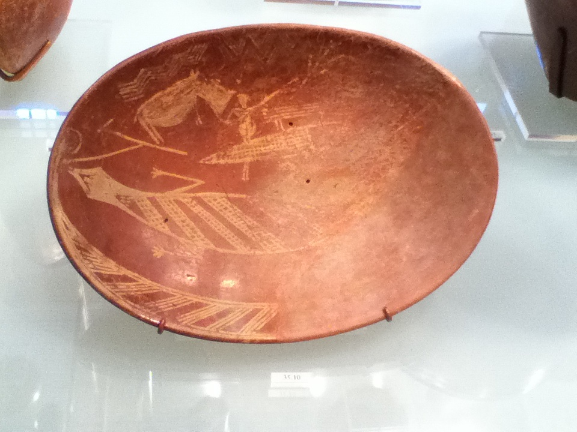
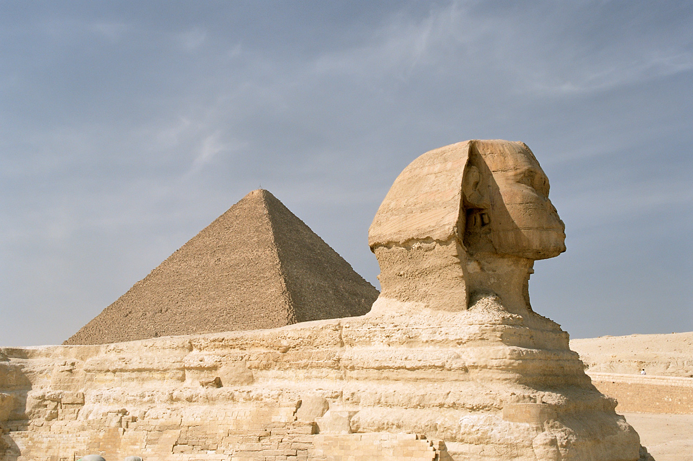
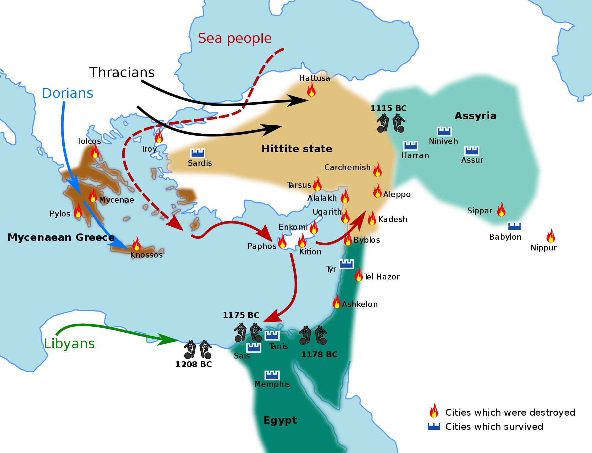
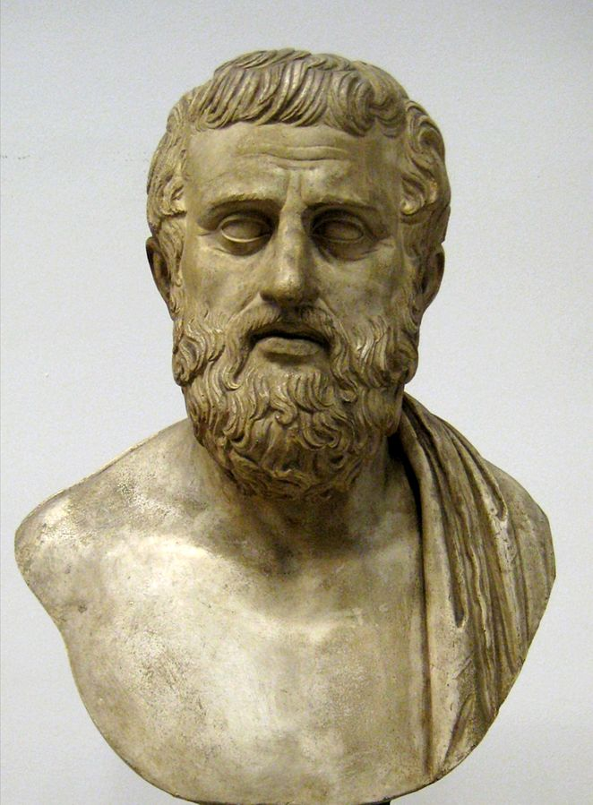
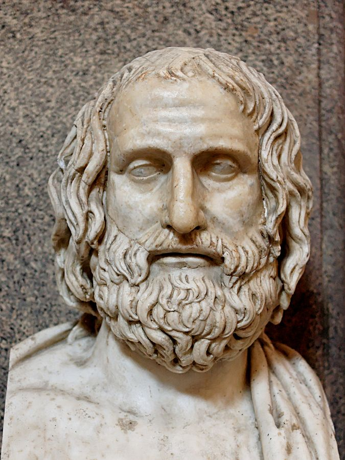
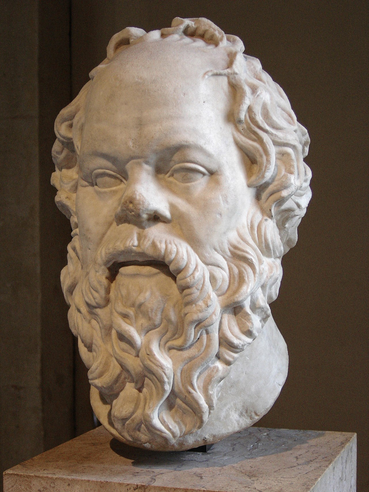
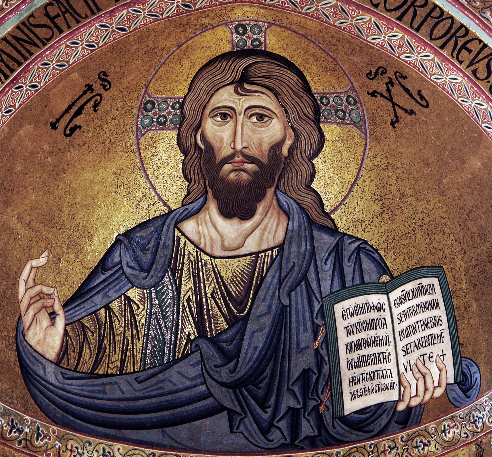

The Venus Statues
The Venus statues are the first recognizably human figures. They appear all over ancient Eurasia, and have been identified as symbols of fertility.
The Bronze Age Starts
The Bronze Age is the period where civilization starts to settle and develop literature--stories that we can now study today. The first civilizations start in the middle east, where we find the first recovered stories and documents.
The Early Dynastic Period
The first dynasty represents the first unification of the Nile into what we know as Egypt. The civilization will go on for thousands of years from this point. The Early Dynastic Period goes from the first to the third dynasty.
The Epic of Gilgamesh
The Epic of Gilgamesh is the first complete work of fiction that still exists in the modern world. It involves themes of friendship, love, power dynamics, masculinity and femininity, and life and death. Gilgamesh has also cemented itself as a part of modern mythology, which can be seen in things like his appearance in Star Trek.

The Old Kingdom
Although not much different culturally from the Early Dynastic Period, the Old Kingdom is considered distinct because of the new developments in architecture. These include the great pyramids and the sphinx. It runs from the third to the seventh dynasty, and is followed by a short intermediate period full of strife. The first surviving papyri are from this period.
The Middle Kingdom
The Middle Kingdom is fascinating because it is the first major source of Egyptian literature unrelated to religion. This includes letters, stories (likely oral tradition that was written down), and more. It runs from the eleventh to the twelfth dynasty. It is followed by another period of instability due to an invasion by the Hyksos.

The New Kingdom
The New Kingdom is the most prosperous of the ancient Egyptian kingdoms, and probably the most famous, including pharaohs such as Tutankhamun, Ramesses, Thutmose III, and more. This period lasts from the eighteenth to the twentieth dynasty.

The Bronze Age Collapse
The Bronze Age Collapse represents the end of the majority of bronze age civilizations in the easten Mediterranean and the Middle East. No cause has been proven or accepted, although many theories exist. Literacy rates, quality of living, and preservation of works all dropped severely.
Rise of Greek City-States
Around this time, the area around the Aegean sea gives rise to a collection of up to a thousand separate cities, all acting as independent states that fought, traded, and interacted. This period is called "classical antiquity," and is one of the most studied periods of history today due to the prevalence of still-existing art, literature, and culture.

Sappho
Sappho is one of the most interesting cases of an artist due to being a. A woman and b. A lesbian. The term "lesbian," in fact, is an allusion to Sappho's birthplace, Lesbos. Much of her work has, unfortunately, been intentionally destroyed because of this.
 630-570BCE
630-570BCE
Aesop
Aesop is perhaps the most famous storyteller of all time, known almost exclusively for Aesop’s Fables, a collection of tales that he told. The collection “Aesop’s Fables” is not published until hundreds of years after his death, and indeed includes stories that he likely did not write himself.
 620-564BCE
620-564BCE
Sophocles
Sophocles is one of the three tragedian playwrights from Ancient Greece that still has surviving works--a total of seven, all of which are notable and recognizable even in today’s society. However, he likely wrote over 120 plays in total, and was certainly one of if not the single most influential tragedian playwright in Ancient Greece.
 497-406BCEEuripides
If Sophocles is the most famous Ancient Greek tragedian playwright, Euripides is the second most. He wrote almost 100 plays, with between 15-20 surviving today (multiple of them are disputed and could be attributed to other authors.)
 480-406BCESocrates
Socrates is credited with founding western philosophy. Though he did not write anything himself, his dialogues were recorded by his friends and his students, most notably Plato, Crito, Xenophon, and Phaedo. He was executed in 399 on counts of impiety and “corruption of the youth.” He was called a gadfly for his pestering of the citizens of Athens with intellectualism and deep thought, and because of this, the gadfly is one of his symbols in the modern day.
 470-399BCEAristotle
Aristotle is one of the greatest minds of all time, most famous for his works on philosophy, but also known for his pioneering works in zoology, physics, and more. His influence in every field he touched can still be felt today, and his works are studied even today.
 384-322BCE
384-322BCE
Jesus Christ
The beginning of the Common Era, 0CE, is traditionally associated with the death of Jesus, a notable figure of Christianity.
 0CE